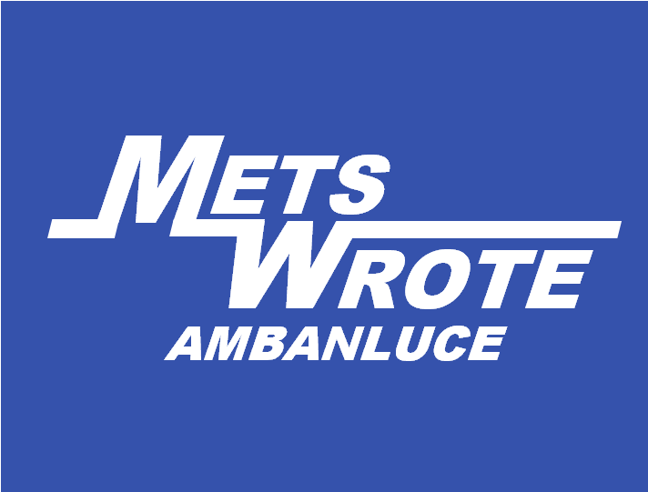
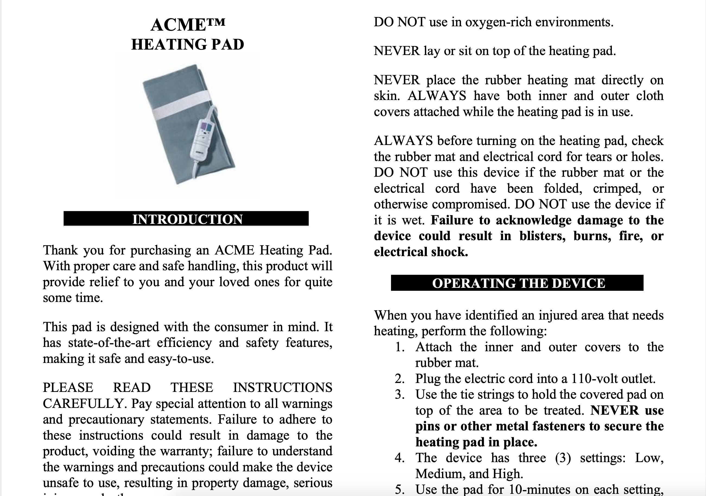
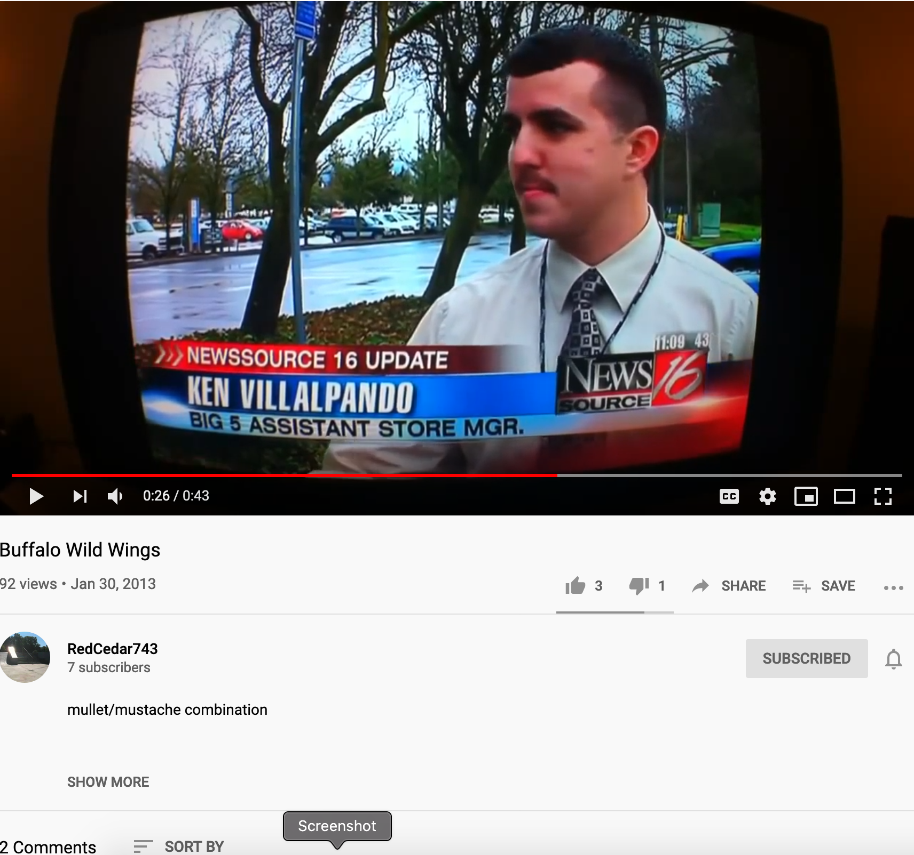

Ken Villalpando
Tech Hobbyist + IT Professional
Projects:

This Site!
I built this page while learning html and CSS. It's likely to be ever changing as I learn more techniques for web design.
Company IT Page
The reason I began learning Web Development. My company needed a new IT page; I made this using what I've learned so far.
Technical Writing
Under Contruction...

Pictures
Under Construction...
Videos
Under Construction...

Desk Projecct
Under Construction...
Education + Certifications
Colorado State University
Bachelor of Science IT (08/2017 - 12/2019)
Excelled in these courses:
- Organizational Leadership
- IT Project Management
- Network Security
- Python Programming
- Database Management (MySQL)
Portland Community College
Associate of Science (08/2016 - 08/2017)
Excelled in these courses:
- Public Speaking
- Technical Writing
- C++ Programming
(Linux Environment)
Class Certifications
Windows Server 2016: Networking
Candidate: U2EXL, Certificate: C45EM
TestOut Labsim
Security Pro (CompTIA Approved)
Candidate: U2EXL, Certificate: C3AJR
TestOut Labsim
Network Pro (CompTIA Approved)
Candidate: U2EXL, Certificate: C38XS
TestOut Labsim
LinkedIn Learning
Intro to Web Design and Development
HTML Essential Training
CSS Essential Training [In Progress]
WordPress 5 Essential Training
Work Experience:
Network Administrator | Metro West Ambulance
(11/13/17 - Present)
Job Summary:
Responsible for installing, maintaining and upgrading any software or hardware required to efficiently run the computer network; this extends to a local area network, wide area network, the Internet and intranets.
Additional Duties:
- Mobile Device Management for Company Cell Phones and Tablets
- Communicate IT department directives with technical and non-technical stakeholders and employees
Store Manager | Big 5 Sporting Goods
(7/13/10 - 8/16/16)
Job Summary:
Responsible for overseeing the daily operations of the store. Duties include motivating sales teams, creating business strategies, developing promotional material, and training new staff.
Optional List:
- Recruit, cultivate, and direct a staff of 13 to 16 team members
- Explain and interpret company policies to customers and staff; conflict resolution

About Me:
I completed a Bachelor Science for Information Technology just in time for COVID-19 quarantine. During this time, I've been taking guitar and Spanish lessons while completing courses on LinkedIn Learning.
I decided to make a website to practice what I've learned in the HTML and CSS Essential Courses.
- Links that Changed Everything:
- Mindfulness for Studying
- Breathing for Anxiety
- Bullet Journaling